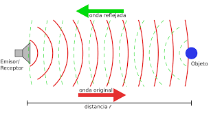
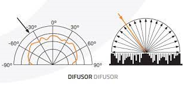

EL SONIDO EN FISICA
REFLEXION, TRANSMICION, REFRACCION Y DIFUSION
Que es sonido?
En física, el sonido es una vibración que se propaga como una onda acústica, a través de un medio de transmisión como un gas, líquido o sólido. En fisiología y psicología humanas, el sonido es la recepción de tales ondas y su percepción por parte del cerebro. Solo las ondas acústicas que tienen frecuencias que se encuentran entre aproximadamente 20 Hz y 20 kHz, el rango de frecuencia de audio, provocan una percepción auditiva en los humanos. En el aire a presión atmosférica, representan ondas sonoras con longitudes de onda de 17 metros a 1,7 centímetros. Las ondas de sonido por encima de 20 kHz se conocen como ultrasonido y no son audibles para los humanos. Las ondas sonoras por debajo de 20 Hz se conocen como infrasonido. Las diferentes especies de animales tienen diferentes rangos de audición.
En estas tablas encontraras la velocidad del sonido en metros por segundo V = (M / S) en distintos materiales
GASES A 0°C
| MEDIO | VELOCIDAD (M / S) |
|---|---|
| AIRE | 331 |
| DIOXIDO DE CARBONO | 259 |
| OXIGENO | 316 |
| HELIO | 925 |
| HIDROGENO | 1.290 |
LIQUIDOS A 20°C
| MEDIO | VELOCIDAD (M / S) |
|---|---|
| ETANOL | 1.160 |
| MERCURIO | 1.450 |
| AGUA DULCE | 1.480 |
| AGUA DE MAR | 1.540 |
| TEJIDO HUMANO | 1.540 |
SOLIDOS (LONGITUDINALES O DE COMPRESIBILIDAD)
| MEDIO | VELOCIDAD (M / S) |
|---|---|
| CAUCHO VULCANIZADO | 54 |
| POLIETILENO | 920 |
| MARMOL | 3.810 |
| VIDRIO, PYREX | 5.640 |
| PLOMO | 1.960 |
| ALUMINIO | 5.120 |
| ACERO | 5.960 |
PARA UTILIZAR LAS SIGUIENTES CALCULADORAS NECESITAMOS USAR LOS DATOS QUE NOS PROPORCIONAN LAS TABLAS ANTERIORES
CALCULA LOS METROS QUE RECORRE EL SONIDO POR SEGUNDO
INGRESA LOS DATOS PARA CALCULAR LA DISTANCIA RECORRIDA EN EL TIEMPO INGRESADO (segundos)
CALCULA LOS SEGUNDOS QUE TARDA EN RECORRE EL SONIDO UNA CIERTA DISTANCIA
INGRESA LOS DATOS PARA CALCULAR CUANTO TIEMPO TARDA EN RECORRE LA DISTANCIA INGRESADA (METROS)
Estos son algunos fenomenos relacionados con la propagacion del sonido:

REFLEXION
Una onda se refleja ("rebota" al medio del cual proviene) se encuentra con un obstáculo que no puede traspasar ni rodear...
TRANSMISION
El sonido se propaga de un lugar a otro, pero siempre lo hace a través de un medio material...

REFRACCION
Es la desviación que sufren las ondas en la dirección de su propagación, cuando el sonido pasa de un medio a otro diferente...

DIFUSION
La difusión es el método que permite propagar la energía del sonido para mejorar el sonido en un espacio...